黑群晖最新安装教程
黑群晖最新安装教程
我这里拿蜗牛星际举例讲解，如何安装群晖最新引导文件，如何正常使用黑群晖。
准备
- 黑群晖设备一台
- 电源线
- hdmi 或者其他视频线
- 有线鼠标
- 有线键盘
- 显示器
- 8g 以上U盘
- 一块1T以上硬盘
开始安装
1. 制作U盘启动器
下载 大白菜U盘制作器 https://www.dabaicai.com/
1、打开大白菜超级U盘装机工具，点击主界面的【U盘启动】模块，然后选择【默认模式】。
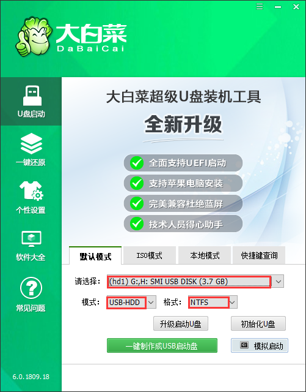
2、在【请选择】后面选择需要制作启动的设备（插入的USB设备，一般会默认读取该设备）。
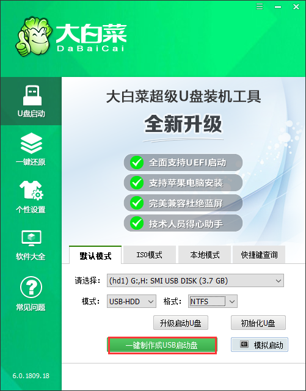
3、模式选择【USB-HDD】，格式选择【NTFS】，然后点击【一键制作USB启动盘】。
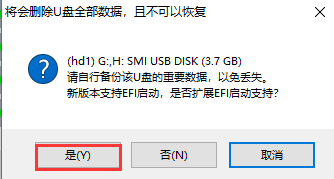
4、在点击一键制作后会弹出一个关于【U盘数据删除且不可恢复】的窗口，选择【是】。
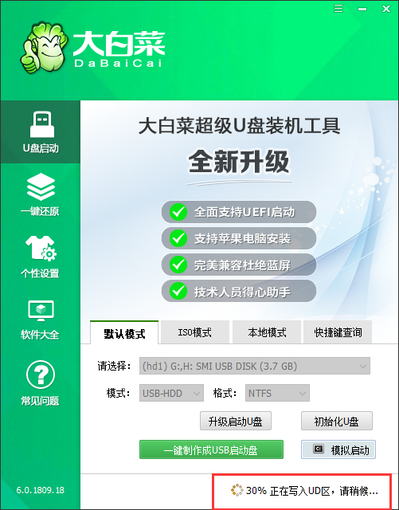
2. 引导文件复制
开始前先拔掉前面4个盘位的硬盘，以防写错盘导致数据丢失。
1、载写盘软件和群晖引导文件，然后二个文件复制到U盘上
引导文件下载链接: https://pan.baidu.com/s/1F-Mva0AuEehUNk4q19QyxA
提取码: amf3
复制到U盘!
3. U盘启动黑群晖，写入文件
开始前先拔掉前面4个盘位的硬盘，以防写错盘导致数据丢失。
1、大白菜U盘启动,插上U盘开机自检页面 按F11或F7（根据机型不同快捷按键不同），选U盘启动

2、桌面找到 分区工具DiskGenius

3、点选 第一个硬盘 即便是内置的16G硬盘，右键选删除所有分区


4、保存更改


5、删除分区完毕后 打开此电脑 找 默认的第一个分区里面的写盘工具

6、选择写盘工具软件 打开

7、全部保存默认参数，只需要找到群晖引导文件 打开

8、找到U盘上的群晖引导文件IMG，然后点 右下角的Start 按钮开始写入

写入完毕的 提示，此时就写入完成了，拔掉U盘重启系统即可。
4. 重启设备后安装DSM系统
这里为了保证系统稳定性，使用DSM6.2.3系统，我们这边使用DS918+4盘符
1、下载群晖助手软件和系统文件
Synology Assistant: https://cndl.synology.cn/download/Utility/Assistant/7.0.4-50051/Windows/synology-assistant-7.0.4-50051.exe?model=DS918%2B&bays=4&dsm_version=6.2.4&build_number=25556
2、DSM6.2.3系统：https://pan.baidu.com/s/15CYI12-P1GcdLOa-FqNWrA
提取码: riub
2、安装群晖助手软件：在同一网段内的电脑上安装群晖助手软件
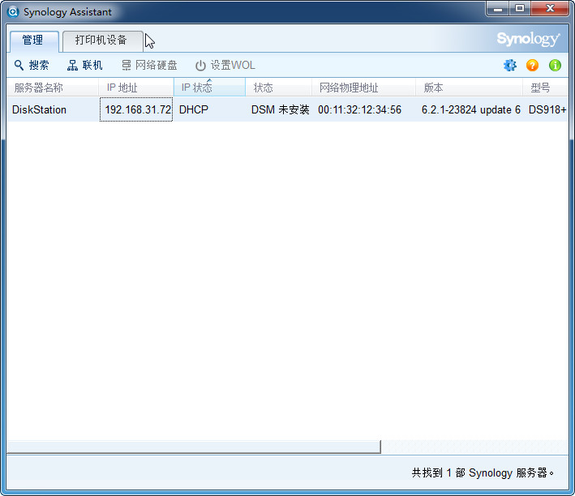
3、打开群晖助手搜索到IP,如果要在线安装系统 就选联机 如果本地安装系统就选 安装
推荐使用在线安装方式,
注意一定要指定系统文件安装，否则会导致引导系统损坏无法进入系统。
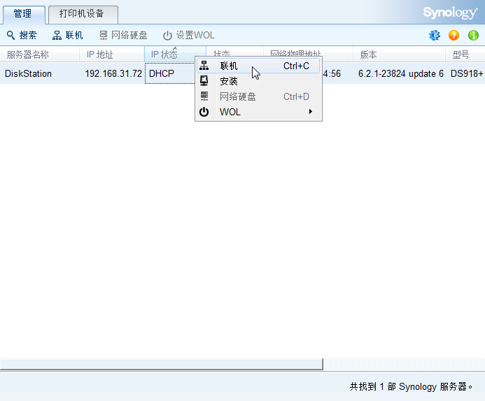
4、然后右键点联机 会跳出网页，浏览器弹出群晖系统的安装界面，选择手动安装
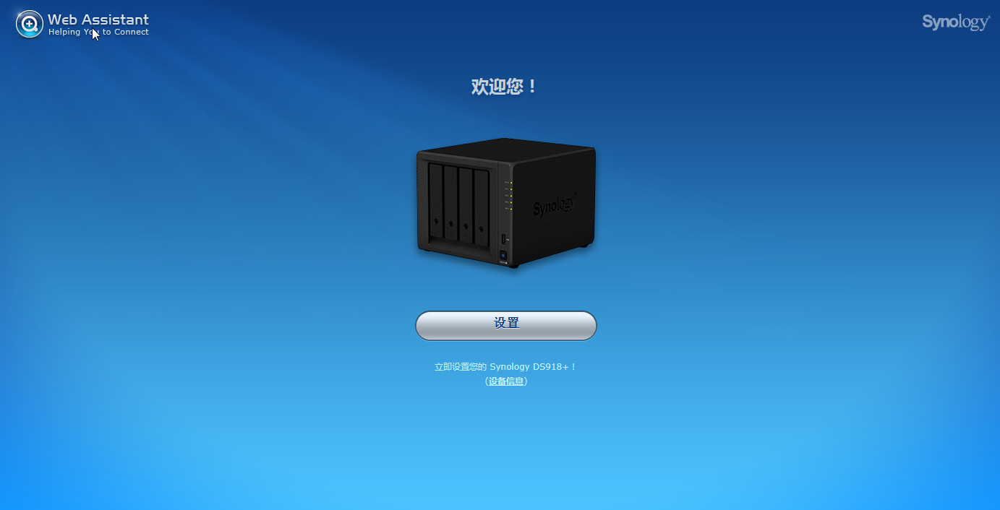
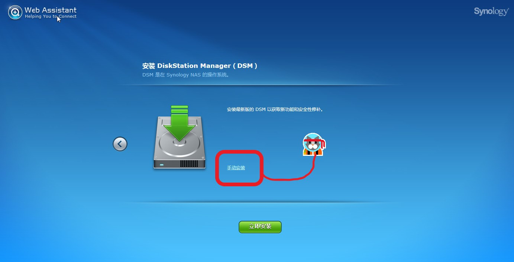
5、手动方式指定系统文件安装、勾选 开始格式化硬盘
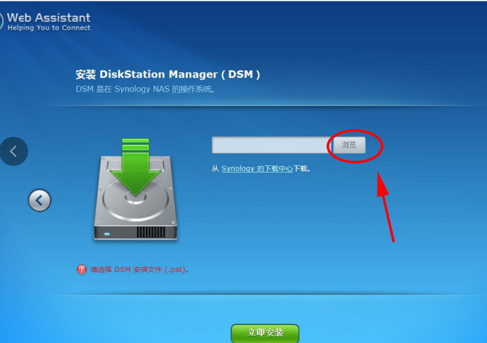
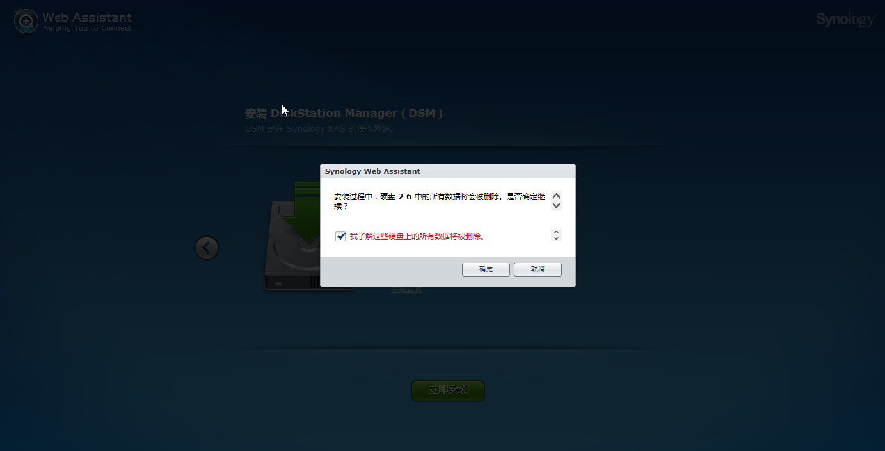
6、等待
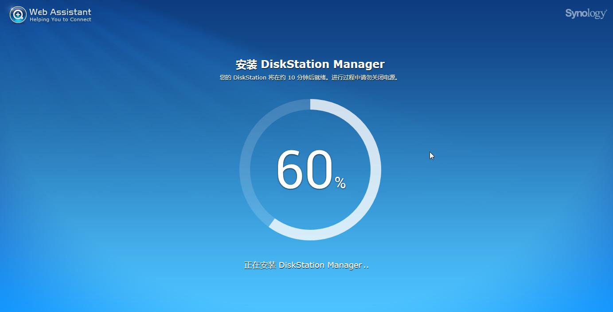
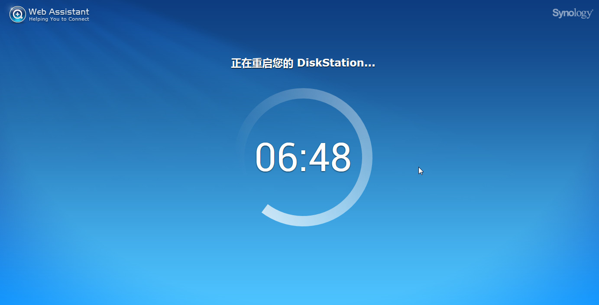
7、设置你的账号和密码，开始使用吧！
总结
实际上安装并不复杂，只是在一些关键环节上不要出错，不过也没关系，如果有问题就重新安装就好了，既然你已经用了黑群晖了，就不要关注数据安全的问题了。其实对于我们普通人来说，数据其实没有你想象中的那么重要。